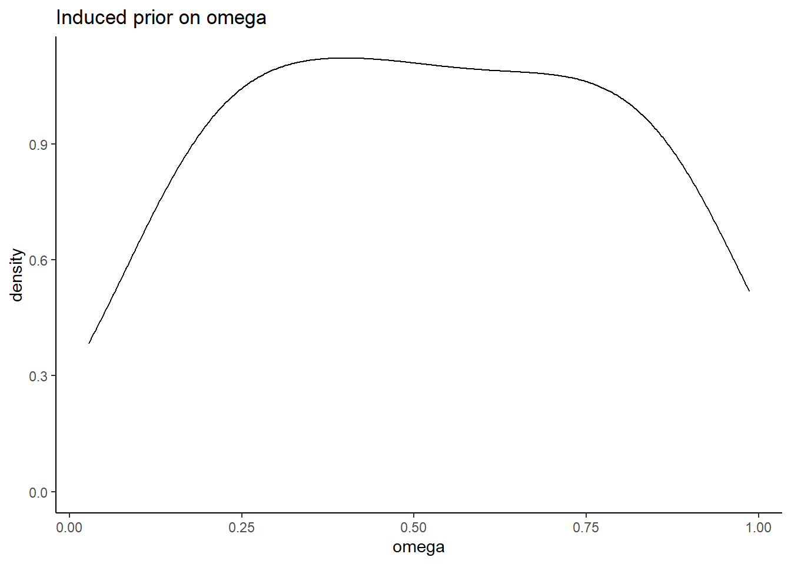
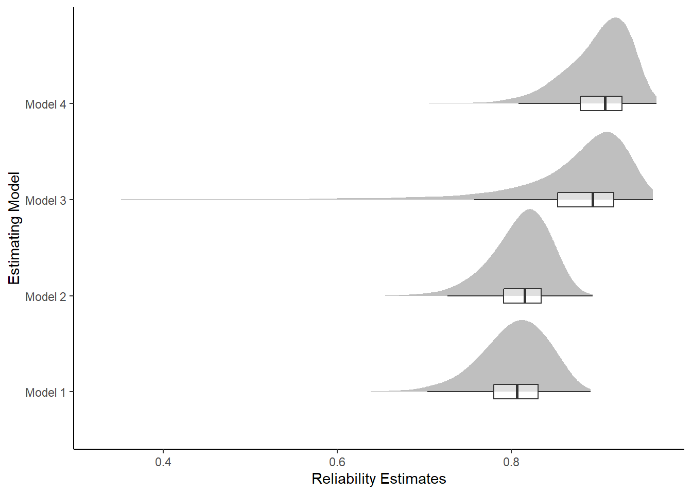
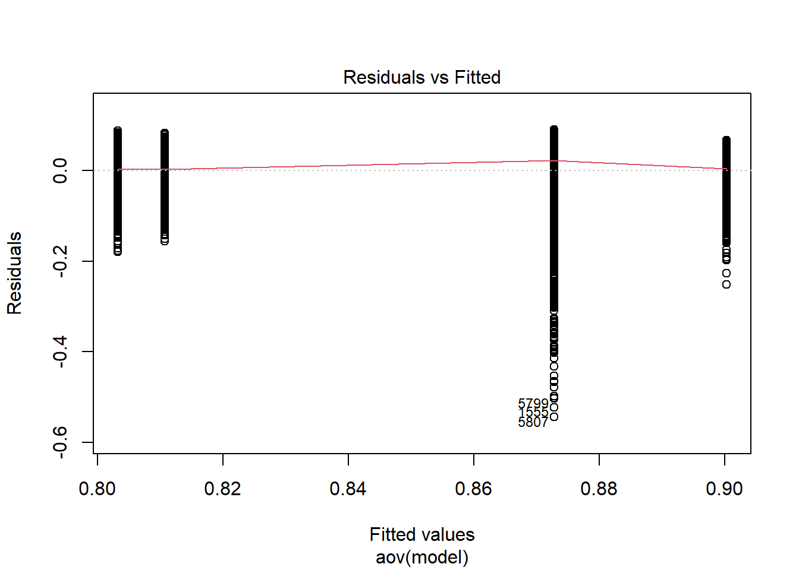
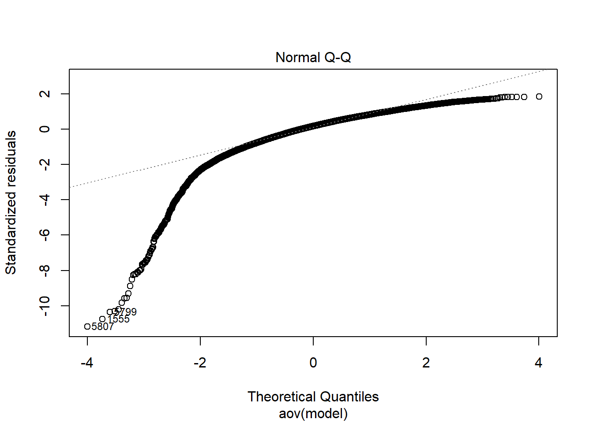
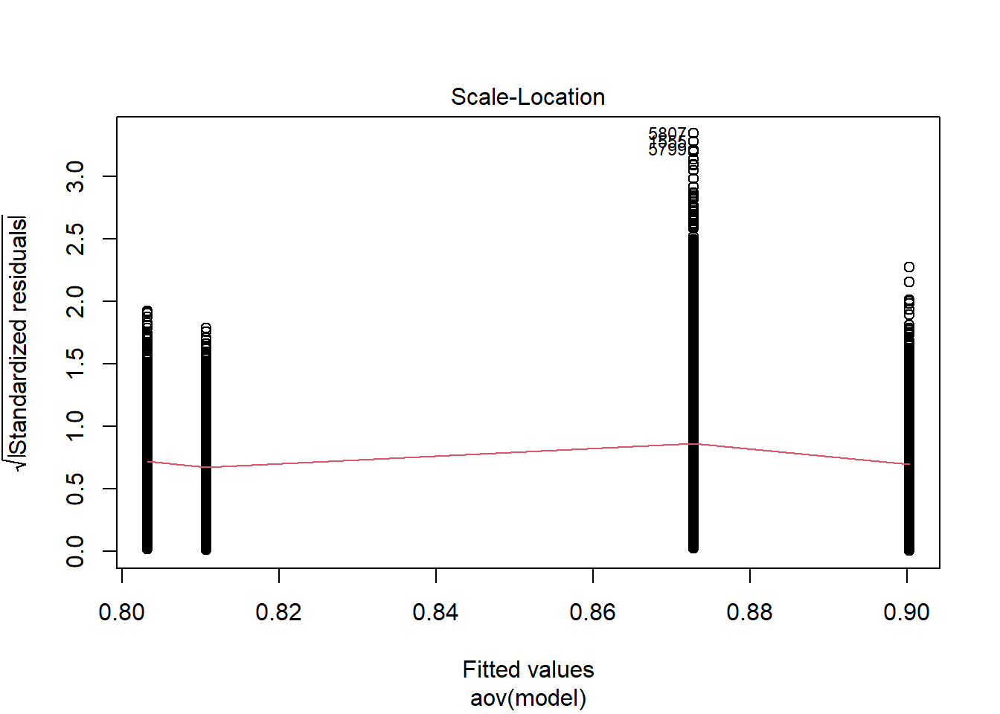
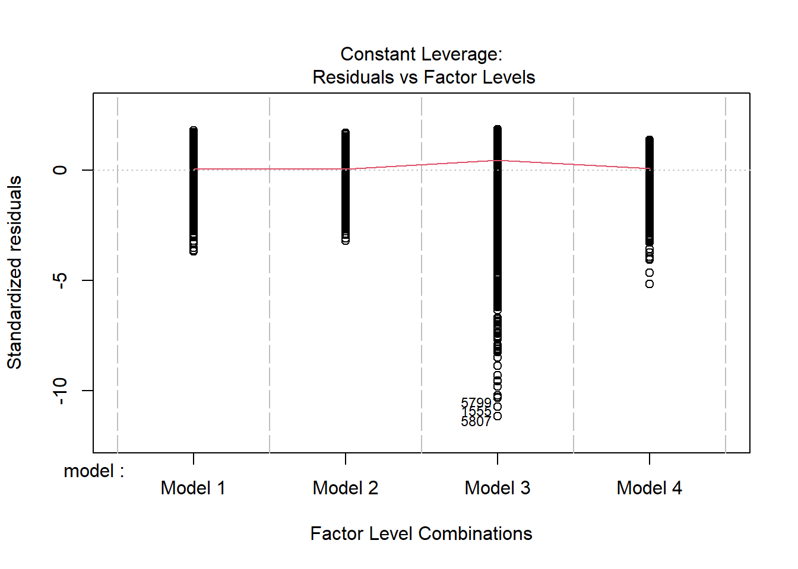
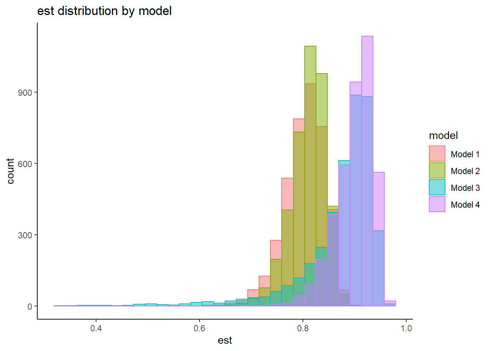
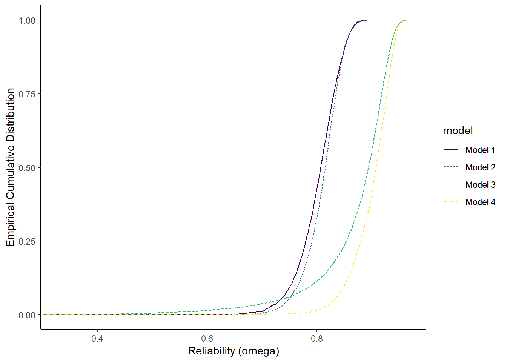
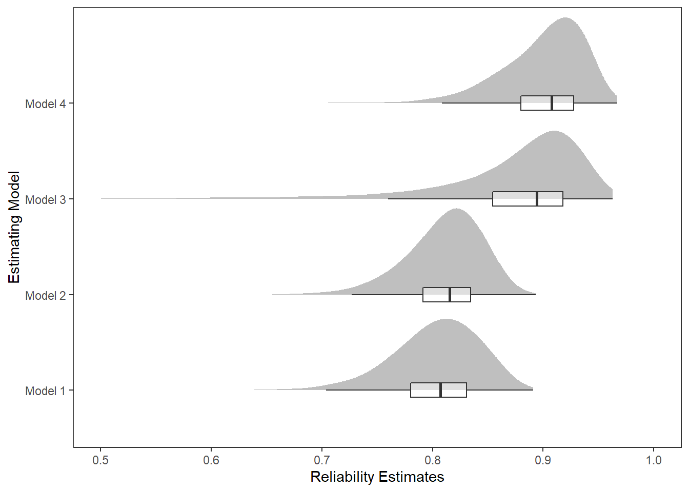

Last updated: 2023-02-02
Checks: 6 1
Knit directory: EJP-Special-Issue/
This reproducible R Markdown analysis was created with workflowr (version 1.7.0). The Checks tab describes the reproducibility checks that were applied when the results were created. The Past versions tab lists the development history.
The R Markdown is untracked by Git. To know which version of the R
Markdown file created these results, you’ll want to first commit it to
the Git repo. If you’re still working on the analysis, you can ignore
this warning. When you’re finished, you can run
wflow_publish to commit the R Markdown file and build the
HTML.
Great job! The global environment was empty. Objects defined in the global environment can affect the analysis in your R Markdown file in unknown ways. For reproduciblity it’s best to always run the code in an empty environment.
The command set.seed(20220808) was run prior to running
the code in the R Markdown file. Setting a seed ensures that any results
that rely on randomness, e.g. subsampling or permutations, are
reproducible.
Great job! Recording the operating system, R version, and package versions is critical for reproducibility.
Nice! There were no cached chunks for this analysis, so you can be confident that you successfully produced the results during this run.
Great job! Using relative paths to the files within your workflowr project makes it easier to run your code on other machines.
Great! You are using Git for version control. Tracking code development and connecting the code version to the results is critical for reproducibility.
The results in this page were generated with repository version e8c2051. See the Past versions tab to see a history of the changes made to the R Markdown and HTML files.
Note that you need to be careful to ensure that all relevant files for
the analysis have been committed to Git prior to generating the results
(you can use wflow_publish or
wflow_git_commit). workflowr only checks the R Markdown
file, but you know if there are other scripts or data files that it
depends on. Below is the status of the Git repository when the results
were generated:
Ignored files:
Ignored: .Rhistory
Ignored: .Rproj.user/
Untracked files:
Untracked: analysis/data_summary.Rmd
Untracked: analysis/extroversion.Rmd
Untracked: analysis/model1_results.Rmd
Untracked: analysis/model2_results.Rmd
Untracked: analysis/model3_results.Rmd
Untracked: analysis/model4_results.Rmd
Untracked: analysis/model_comparison.Rmd
Untracked: code/JAGS/
Untracked: code/load_packages.R
Untracked: code/load_utility_functions.R
Untracked: data/extracted_maximal_m1.csv
Untracked: data/extracted_omega_m1.csv
Untracked: data/extracted_omega_m2.csv
Untracked: data/extracted_omega_m3.csv
Untracked: data/extracted_omega_m4.csv
Untracked: data/posterior_draws_m1.csv
Untracked: data/posterior_draws_m2.csv
Untracked: data/posterior_draws_m3.csv
Untracked: data/posterior_draws_m4.csv
Untracked: fig/
Unstaged changes:
Modified: analysis/index.Rmd
Note that any generated files, e.g. HTML, png, CSS, etc., are not included in this status report because it is ok for generated content to have uncommitted changes.
There are no past versions. Publish this analysis with
wflow_publish() to start tracking its development.
# Load packages & utility functions
source("code/load_packages.R")
source("code/load_utility_functions.R")
# environment options
options(scipen = 999, digits=3)# true reliability value in population
getOmega <- function(lambda, N_items){
theta = 1-lambda**2
(lambda*N_items)**2/((lambda*N_items)**2 + N_items*theta)
}
# simulated induced prior on omega
prior_lambda <- function(){
y <- -1
while(y < 0){
lvar <- runif(1, 0.1, 5)
y <- rnorm(1, 0, 1/lvar)
}
return(y)
}
prior_omega <- function(lambda, theta){
(sum(lambda)**2)/(sum(lambda)**2 + sum(theta))
}
nsim=1000
sim_omega <- numeric(nsim)
for(i in 1:nsim){
lam_vec <- c(
prior_lambda(), prior_lambda(), prior_lambda(),prior_lambda(), prior_lambda()
)
tht_vec <- rep(1, 5)
sim_omega[i] <- prior_omega(lam_vec, tht_vec)
}
prior_data <- data.frame(omega=sim_omega)
ggplot(prior_data, aes(x=omega))+
geom_density(adjust=2)+
labs(title="Induced prior on omega")+
theme_classic()
# read in data
o1 <- readr::read_csv(paste0(getwd(),"/data/extracted_omega_m1.csv"))New names:
Rows: 4000 Columns: 2
── Column specification
──────────────────────────────────────────────────────── Delimiter: "," dbl
(2): ...1, model_1
ℹ Use `spec()` to retrieve the full column specification for this data. ℹ
Specify the column types or set `show_col_types = FALSE` to quiet this message.
• `` -> `...1`o2 <- readr::read_csv(paste0(getwd(),"/data/extracted_omega_m2.csv"))New names:
Rows: 4000 Columns: 2
── Column specification
──────────────────────────────────────────────────────── Delimiter: "," dbl
(2): ...1, model_2
ℹ Use `spec()` to retrieve the full column specification for this data. ℹ
Specify the column types or set `show_col_types = FALSE` to quiet this message.
• `` -> `...1`o3 <- readr::read_csv(paste0(getwd(),"/data/extracted_omega_m3.csv"))New names:
Rows: 4000 Columns: 2
── Column specification
──────────────────────────────────────────────────────── Delimiter: "," dbl
(2): ...1, model_3
ℹ Use `spec()` to retrieve the full column specification for this data. ℹ
Specify the column types or set `show_col_types = FALSE` to quiet this message.
• `` -> `...1`o4 <- readr::read_csv(paste0(getwd(),"/data/extracted_omega_m4.csv"))New names:
Rows: 4000 Columns: 2
── Column specification
──────────────────────────────────────────────────────── Delimiter: "," dbl
(2): ...1, model_4
ℹ Use `spec()` to retrieve the full column specification for this data. ℹ
Specify the column types or set `show_col_types = FALSE` to quiet this message.
• `` -> `...1`dat_omega <- cbind(o1[,2], o2[,2], o3[,2], o4[,2])
plot.dat <- dat_omega %>%
pivot_longer(
cols=everything(),
names_to = "model",
values_to = "est"
) %>%
mutate(
model = factor(model, levels=paste0('model_',1:4), labels=paste0('Model ',1:4))
)
sum.dat <- plot.dat %>%
group_by(model) %>%
summarise(
Mean = mean(est),
SD = sd(est),
Q025 = quantile(est, 0.025),
Q1 = quantile(est, 0.25),
Median = median(est),
Q3 = quantile(est, 0.75),
Q975 = quantile(est, 0.975),
)
kable(sum.dat,format = "html", digits=3) %>%
kable_styling(full_width = T)| model | Mean | SD | Q025 | Q1 | Median | Q3 | Q975 |
|---|---|---|---|---|---|---|---|
| Model 1 | 0.803 | 0.039 | 0.714 | 0.780 | 0.807 | 0.831 | 0.866 |
| Model 2 | 0.811 | 0.034 | 0.733 | 0.791 | 0.815 | 0.835 | 0.865 |
| Model 3 | 0.873 | 0.074 | 0.664 | 0.854 | 0.894 | 0.918 | 0.946 |
| Model 4 | 0.900 | 0.037 | 0.812 | 0.880 | 0.908 | 0.928 | 0.948 |
ggplot(plot.dat,aes(x=est, y=model, group=model))+
ggdist::stat_halfeye(
adjust=2, justification=0,.width=0, point_colour=NA,
normalize="all", fill="grey75"
) +
geom_boxplot(
width=.15, outlier.color = NA, alpha=0.5
) +
labs(x="Reliability Estimates",
y="Estimating Model")+
#lims(x=c(0.80, 1))+
theme_classic()
anova_assumptions_check(
dat = plot.dat, outcome = 'est',
factors = c('model'),
model = as.formula('est ~ model'))
=============================
Tests and Plots of Normality:
Shapiro-Wilks Test of Normality of Residuals:
Shapiro-Wilk normality test
data: res
W = 0.8, p-value <0.0000000000000002
K-S Test for Normality of Residuals:
Asymptotic one-sample Kolmogorov-Smirnov test
data: aov.out$residuals
D = 0.5, p-value <0.0000000000000002
alternative hypothesis: two-sided`stat_bin()` using `bins = 30`. Pick better value with `binwidth`.
=============================
Tests of Homogeneity of Variance
Levenes Test: model
Levene's Test for Homogeneity of Variance (center = "mean")
Df F value Pr(>F)
group 3 417 <0.0000000000000002 ***
15996
---
Signif. codes: 0 '***' 0.001 '**' 0.01 '*' 0.05 '.' 0.1 ' ' 1fit <- aov(est ~ model, data=plot.dat)
summary(fit) Df Sum Sq Mean Sq F value Pr(>F)
model 3 27.0 8.99 3796 <0.0000000000000002 ***
Residuals 15996 37.9 0.00
---
Signif. codes: 0 '***' 0.001 '**' 0.01 '*' 0.05 '.' 0.1 ' ' 1# tukey
TukeyHSD(fit) Tukey multiple comparisons of means
95% family-wise confidence level
Fit: aov(formula = est ~ model, data = plot.dat)
$model
diff lwr upr p adj
Model 2-Model 1 0.00746 0.00467 0.0103 0
Model 3-Model 1 0.06961 0.06681 0.0724 0
Model 4-Model 1 0.09705 0.09426 0.0998 0
Model 3-Model 2 0.06215 0.05935 0.0649 0
Model 4-Model 2 0.08959 0.08679 0.0924 0
Model 4-Model 3 0.02744 0.02465 0.0302 0# ets^2
summary(lm(est ~ model, data=plot.dat))
Call:
lm(formula = est ~ model, data = plot.dat)
Residuals:
Min 1Q Median 3Q Max
-0.5440 -0.0206 0.0084 0.0311 0.0902
Coefficients:
Estimate Std. Error t value Pr(>|t|)
(Intercept) 0.803188 0.000769 1043.95 < 0.0000000000000002 ***
modelModel 2 0.007463 0.001088 6.86 0.0000000000072 ***
modelModel 3 0.069611 0.001088 63.98 < 0.0000000000000002 ***
modelModel 4 0.097053 0.001088 89.20 < 0.0000000000000002 ***
---
Signif. codes: 0 '***' 0.001 '**' 0.01 '*' 0.05 '.' 0.1 ' ' 1
Residual standard error: 0.0487 on 15996 degrees of freedom
Multiple R-squared: 0.416, Adjusted R-squared: 0.416
F-statistic: 3.8e+03 on 3 and 15996 DF, p-value: <0.0000000000000002Next, instead of treating the posterior
ggplot(plot.dat, aes(est, group=model, color=model, linetype=model)) +
stat_ecdf(
geom = "step",
pad=T
) +
labs(x="Reliability (omega)",
y="Empirical Cumulative Distribution")+
scale_color_viridis_d()+
theme_classic()
print(
xtable(
sum.dat,
, caption = c("Summary of posterior distribution of reliability")
,align = "llrrrrrrr"
),
include.rownames=F,
booktabs=T
)% latex table generated in R 4.2.2 by xtable 1.8-4 package
% Thu Feb 2 14:16:12 2023
\begin{table}[ht]
\centering
\begin{tabular}{lrrrrrrr}
\toprule
model & Mean & SD & Q025 & Q1 & Median & Q3 & Q975 \\
\midrule
Model 1 & 0.80 & 0.04 & 0.71 & 0.78 & 0.81 & 0.83 & 0.87 \\
Model 2 & 0.81 & 0.03 & 0.73 & 0.79 & 0.82 & 0.83 & 0.86 \\
Model 3 & 0.87 & 0.07 & 0.66 & 0.85 & 0.89 & 0.92 & 0.95 \\
Model 4 & 0.90 & 0.04 & 0.81 & 0.88 & 0.91 & 0.93 & 0.95 \\
\bottomrule
\end{tabular}
\caption{Summary of posterior distribution of reliability}
\end{table}p <- ggplot(plot.dat,aes(x=est, y=model, group=model))+
ggdist::stat_halfeye(
adjust=2, justification=0,.width=0, point_colour=NA,
normalize="all", fill="grey75"
) +
geom_boxplot(
width=.15, outlier.color = NA, alpha=0.5
) +
labs(x="Reliability Estimates",
y="Estimating Model")+
lims(x=c(0.5, 1)) +
theme_bw() +
theme(panel.grid = element_blank())
pWarning: Removed 19 rows containing missing values (stat_slabinterval).Warning: Removed 19 rows containing non-finite values (stat_boxplot).
ggsave(filename = "fig/posterior_omega.pdf",plot=p,width = 7, height=4,units="in")Warning: Removed 19 rows containing missing values (stat_slabinterval).
Removed 19 rows containing non-finite values (stat_boxplot).ggsave(filename = "fig/posterior_omega.png",plot=p,width = 7, height=4,units="in")Warning: Removed 19 rows containing missing values (stat_slabinterval).
Removed 19 rows containing non-finite values (stat_boxplot).ggsave(filename = "fig/posterior_omega.eps",plot=p,width = 7, height=4,units="in")Warning: Removed 19 rows containing missing values (stat_slabinterval).
Removed 19 rows containing non-finite values (stat_boxplot).Warning in grid.Call.graphics(C_polygon, x$x, x$y, index): semi-transparency is
not supported on this device: reported only once per pagep <- ggplot(plot.dat,aes(x=est, y=model, group=model))+
ggdist::stat_halfeye(
adjust=2, justification=0,.width=0, point_colour=NA,
normalize="all", fill="grey75"
) +
geom_boxplot(
width=.15, outlier.color = NA, alpha=0.5
) +
labs(x="Reliability Estimates",
y="Estimating Model")+
lims(x=c(0.5, 1)) +
theme_bw() +
theme(panel.grid = element_blank())
pWarning: Removed 19 rows containing missing values (stat_slabinterval).Warning: Removed 19 rows containing non-finite values (stat_boxplot).ggsave(filename = "fig/posterior_omega_ecd.pdf",plot=p,width = 5, height=4,units="in")Warning: Removed 19 rows containing missing values (stat_slabinterval).
Removed 19 rows containing non-finite values (stat_boxplot).ggsave(filename = "fig/posterior_omega_ecd.png",plot=p,width = 5, height=4,units="in")Warning: Removed 19 rows containing missing values (stat_slabinterval).
Removed 19 rows containing non-finite values (stat_boxplot).ggsave(filename = "fig/posterior_omega_ecd.eps",plot=p,width = 5, height=4,units="in")Warning: Removed 19 rows containing missing values (stat_slabinterval).
Removed 19 rows containing non-finite values (stat_boxplot).Warning in grid.Call.graphics(C_polygon, x$x, x$y, index): semi-transparency is
not supported on this device: reported only once per page
sessionInfo()R version 4.2.2 (2022-10-31 ucrt)
Platform: x86_64-w64-mingw32/x64 (64-bit)
Running under: Windows 10 x64 (build 22621)
Matrix products: default
locale:
[1] LC_COLLATE=English_United States.utf8
[2] LC_CTYPE=English_United States.utf8
[3] LC_MONETARY=English_United States.utf8
[4] LC_NUMERIC=C
[5] LC_TIME=English_United States.utf8
attached base packages:
[1] stats graphics grDevices utils datasets methods base
other attached packages:
[1] car_3.1-0 carData_3.0-5 mvtnorm_1.1-3
[4] LaplacesDemon_16.1.6 runjags_2.2.1-7 lme4_1.1-30
[7] Matrix_1.5-1 sirt_3.12-66 R2jags_0.7-1
[10] rjags_4-13 eRm_1.0-2 diffIRT_1.5
[13] statmod_1.4.36 xtable_1.8-4 kableExtra_1.3.4
[16] lavaan_0.6-13.1768 polycor_0.8-1 bayesplot_1.9.0
[19] ggmcmc_1.5.1.1 coda_0.19-4 data.table_1.14.2
[22] patchwork_1.1.1 forcats_0.5.1 stringr_1.4.0
[25] dplyr_1.0.9 purrr_0.3.4 readr_2.1.2
[28] tidyr_1.2.0 tibble_3.1.7 ggplot2_3.3.6
[31] tidyverse_1.3.2 workflowr_1.7.0
loaded via a namespace (and not attached):
[1] readxl_1.4.0 backports_1.4.1 systemfonts_1.0.4
[4] plyr_1.8.7 splines_4.2.2 digest_0.6.29
[7] htmltools_0.5.2 fansi_1.0.3 magrittr_2.0.3
[10] googlesheets4_1.0.0 tzdb_0.3.0 modelr_0.1.8
[13] vroom_1.5.7 svglite_2.1.0 colorspace_2.0-3
[16] rvest_1.0.2 ggdist_3.2.0 textshaping_0.3.6
[19] haven_2.5.0 xfun_0.31 callr_3.7.1
[22] crayon_1.5.1 jsonlite_1.8.0 glue_1.6.2
[25] gtable_0.3.0 gargle_1.2.0 webshot_0.5.3
[28] distributional_0.3.0 abind_1.4-5 scales_1.2.0
[31] DBI_1.1.3 GGally_2.1.2 Rcpp_1.0.8.3
[34] viridisLite_0.4.0 bit_4.0.4 stats4_4.2.2
[37] httr_1.4.3 RColorBrewer_1.1-3 ellipsis_0.3.2
[40] pkgconfig_2.0.3 reshape_0.8.9 farver_2.1.1
[43] sass_0.4.2 dbplyr_2.2.1 utf8_1.2.2
[46] tidyselect_1.1.2 labeling_0.4.2 rlang_1.0.6
[49] later_1.3.0 munsell_0.5.0 cellranger_1.1.0
[52] tools_4.2.2 cachem_1.0.6 cli_3.4.1
[55] generics_0.1.3 broom_1.0.0 ggridges_0.5.3
[58] evaluate_0.15 fastmap_1.1.0 yaml_2.3.5
[61] ragg_1.2.4 processx_3.7.0 knitr_1.39
[64] bit64_4.0.5 fs_1.5.2 admisc_0.29
[67] nlme_3.1-160 whisker_0.4 xml2_1.3.3
[70] compiler_4.2.2 rstudioapi_0.13 reprex_2.0.1
[73] bslib_0.4.0 pbivnorm_0.6.0 stringi_1.7.6
[76] highr_0.9 ps_1.7.0 lattice_0.20-45
[79] TAM_4.0-16 psych_2.2.5 nloptr_2.0.3
[82] vctrs_0.4.1 CDM_8.1-12 pillar_1.8.0
[85] lifecycle_1.0.1 jquerylib_0.1.4 httpuv_1.6.5
[88] R2WinBUGS_2.1-21 R6_2.5.1 promises_1.2.0.1
[91] boot_1.3-28 MASS_7.3-58.1 assertthat_0.2.1
[94] rprojroot_2.0.3 withr_2.5.0 mnormt_2.1.1
[97] parallel_4.2.2 hms_1.1.1 grid_4.2.2
[100] minqa_1.2.4 rmarkdown_2.14 googledrive_2.0.0
[103] git2r_0.30.1 getPass_0.2-2 lubridate_1.8.0